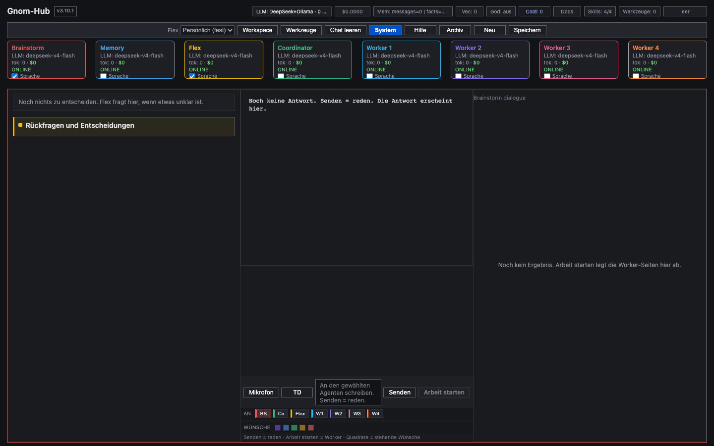

01 · BRAINSTORM
Senden = nur Dialog
Planen und schärfen — ohne stille Worker-Kosten.
Lokaler Multi-Agenten-Hub
Gnom-Hub ist der Desktop-Desk für Multi-Agenten-Arbeit. Senden bleibt Dialog. Worker starten erst mit Arbeit starten — nicht bei jeder Nachricht.
„Frei brainstormen. Ausführen nur, wenn du Arbeit starten drückst.“ Produktregel — Exploration bleibt billig und umkehrbar
Produkt
Lokaler Multi-Agenten-Steuerungs-Hub: sichtbare Agents, ehrliche Keys, HTML-Deliverables, sichere Tools.
Planen und schärfen — ohne stille Worker-Kosten.
Kosten und Dateien starten mit Arbeit starten — abbrechbar und sichtbar.
Agent-Karten, Boxen, Tools-Badge — Desk, keine Blackbox.
Ablauf

Install
Kein Ein-Klick. Git + Python ≥ 3.10 · UI: http://127.0.0.1:8080/
# Terminal-Schnellinstallation — kein Ein-Klick, kein Docker curl -fsSL https://raw.githubusercontent.com/landjunge/gnom-hub-v1/main/scripts/get.sh | sh cd ~/gnom-hub-v1 ./scripts/start.sh # Key: WS-gnom-hub-v1/User/Key.txt → http://127.0.0.1:8080/
FAQ
Lokaler Multi-Agenten-Hub: brainstormen, Arbeit starten nur bewusst.
Nein. Python-Venv + FastAPI auf dem Rechner.
Sichtbarer Desk und bewusstes Arbeit starten — kein stilles Vollautonome.